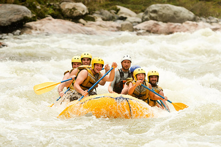

Welcome to White Water Rafting Company! We are dedicated to providing thrilling and unforgettable rafting experiences on some of the most beautiful rivers in the world. Our mission is to take you deep into the heart of the wilderness, where the rush of the rapids meets the serenity of nature.
